(Transcribed by Dave Rudge 1/4/1994)
| 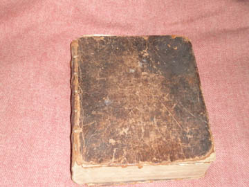 | 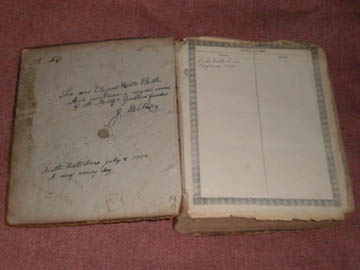 | 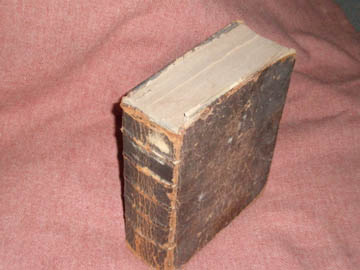 |
According to tradition, the Eligood Mills Bible was first owned by 3. Eligood Mills Sr. (1744-1832), and may have been purchased as early as 1819. From Eligood, it passed on from his grandson, 37. James Mills (by his son 9. William Mills). James Mills in turn passed it on to his daughter, 105. Fanny nee Mills McDaniel (1855-1949). She in turn passed it on to her nephew (by her sister 106. Mary Elizabeth nee Mills Cook), 156. Ralph Mills Cook (1894-1960). It is currently in the possession of one of Ralph Mills Cook’s grandsons.
There are apparently several different authors of the inscriptions included within the bible, which can be noted both by their handwriting and the use of different colored inks. (James Mills identifies himself as one. Fanny nee Mills McDaniel is the most likely person to have introduced annotations referring to published genealogical articles.) A few pages are loose and have placed at the end of the transcript. What follows are a series of scanned images. (Higher resolution scans are available on request.)
| 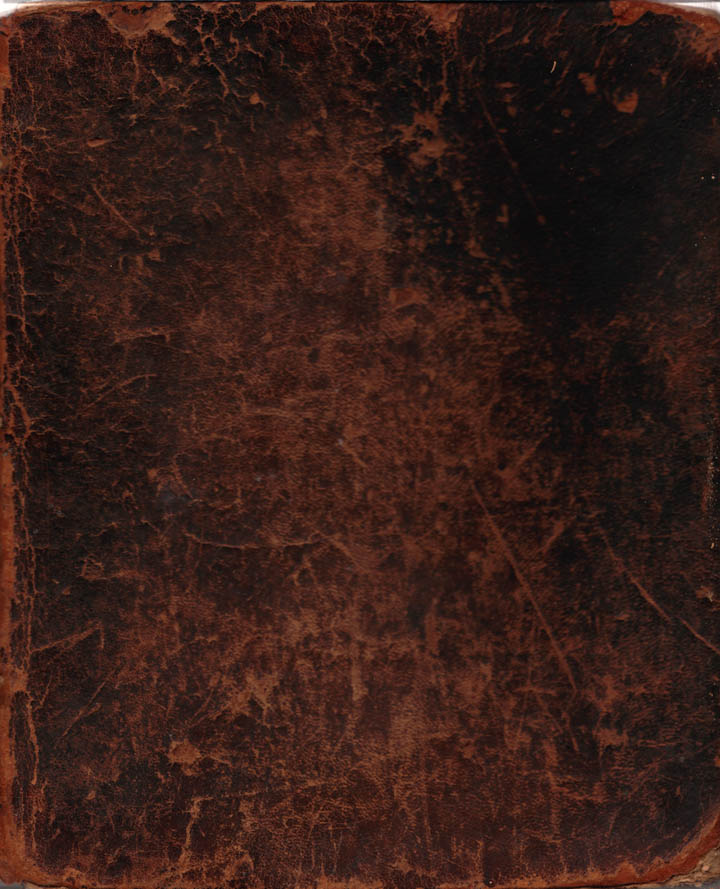 | |||
| 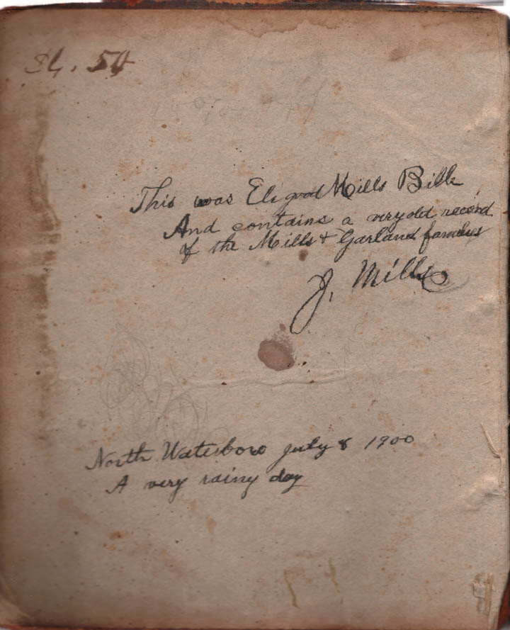 | [Inside cover/Page 1] "This was Eligood Mills Bible, And contains a very old record of the Mills + Garland families J. Mills North Waterboro July 8, 1900 A very rainy day" | ||
| 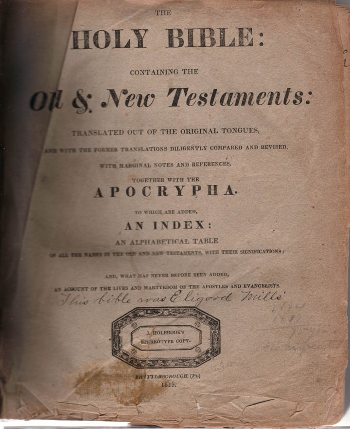 | [Page 2] "This bible was Eligood Mills'"
[Faded pencil lower right] "1894 1819 75 years October past" [?] | ||
| 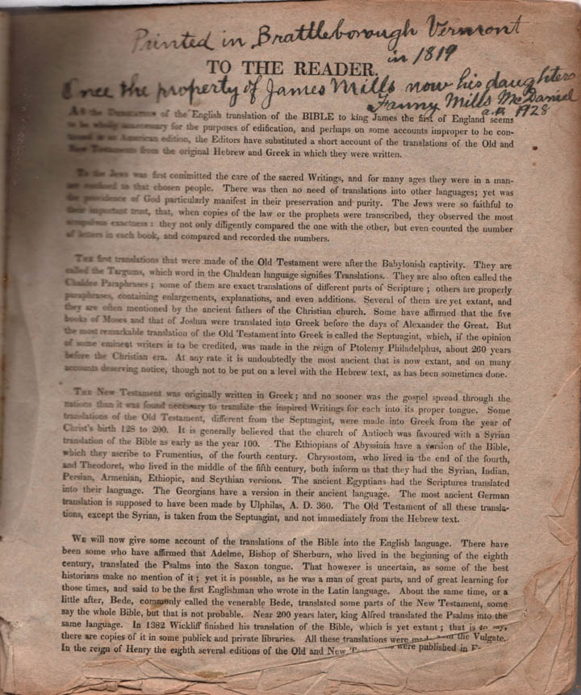 | "Printed in Brattleborough, Vermont in 1819 Once the property of James Mills now his daughters Fanny Mills McDaniel A.D. 1928"
| ||
| 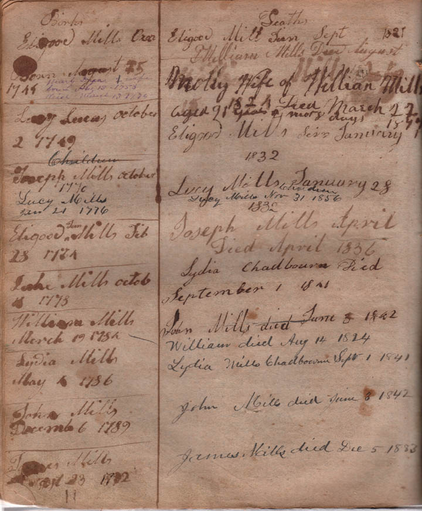 | This page has two columns, which are transcribed separately below.]
| ||
| 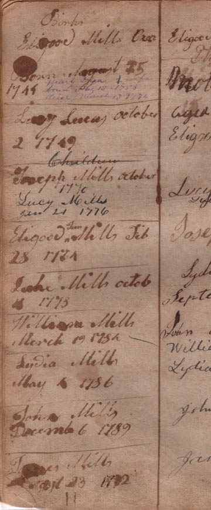 |
"Births [Page 4a]
Eligood Mills Sr. [?] Born August 25 1774 Mary Dyer 2 [struck out and rewritten 1] wife born Aug 13 1753 died Mar 13, 1774 Lucy Lucas October 2 1749 -------Children------ Joseph Mills October 1770 Lucy Mills Jan 21 1776 Eligood Jun Mills Feb 28 1774 Luke Mills Octob 16 1773 William Mills March 19 1784 Lydia Mills May 10 1786 John Mills Decemb 6 1789 James Mills August 23 1792" | ||
| 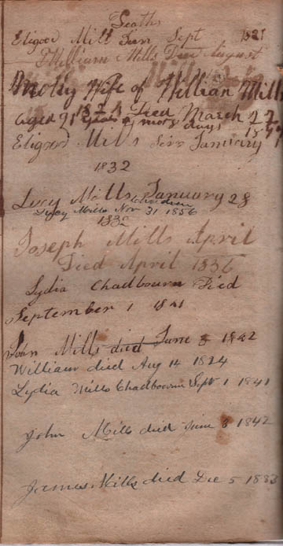 |
"Deaths [Page 4b]
Eligood Mills Jun Sept 1821 William Mills Died August
Molly Wife of William Mills 1824 Died March 22 1877
Age 91 years 4 mos 8 days Eligood Mills Senr January 1 1832 Lucy Mills January 28 Children Lucy Mills Nov 31 1856 1832
Joseph Mills April Died April 1836 Lydia Chadbourne Died September 1 1841
John Mills died June 3 1842 William died Aug 14 1824 Lydia Mills Chadbourn Sept 1 1841
John Mills died June 3 1842
James Mills died Dec 5 1883"
| ||
| 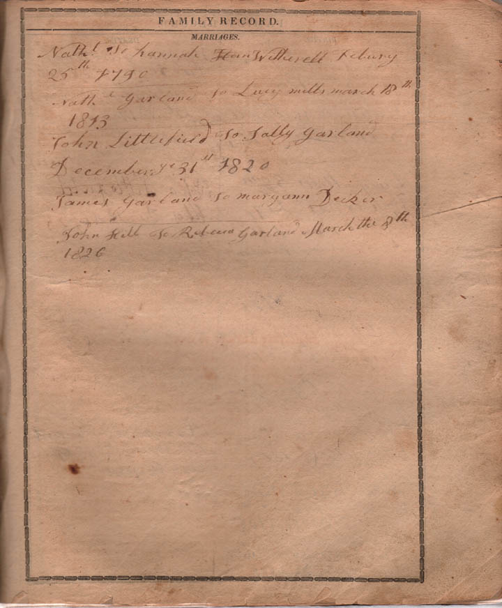 |
"Nathl to hannah Han Witherell Februrary 25th 1790 Nathl Garland To Lucy Mills March 18th 1813 John Littlefield To Sally Garland December 31st 1820 James Garland to maryann Decker John Hill To Rebecca Garland March the 8th 1820 "
| ||
| 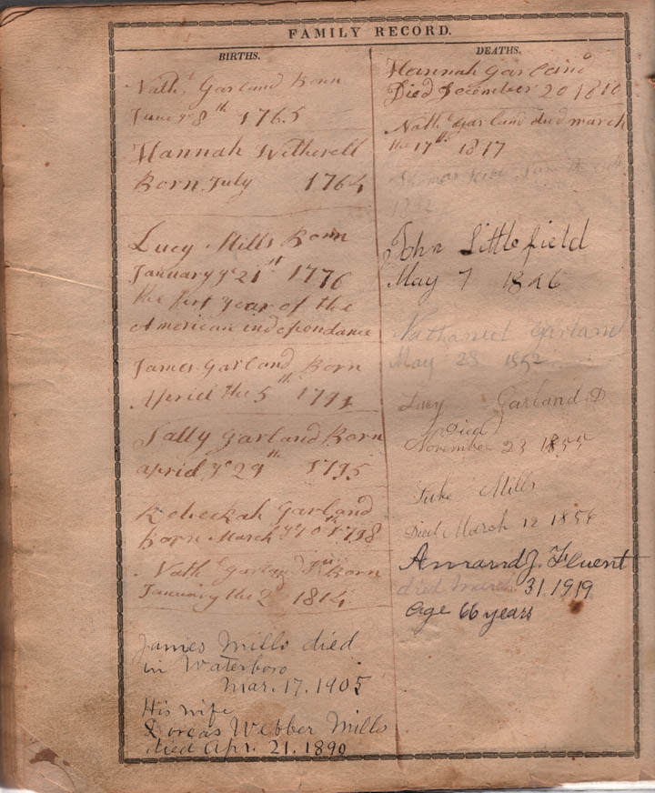 | This page has two columns, which are transcribed separately below.]
| ||
| 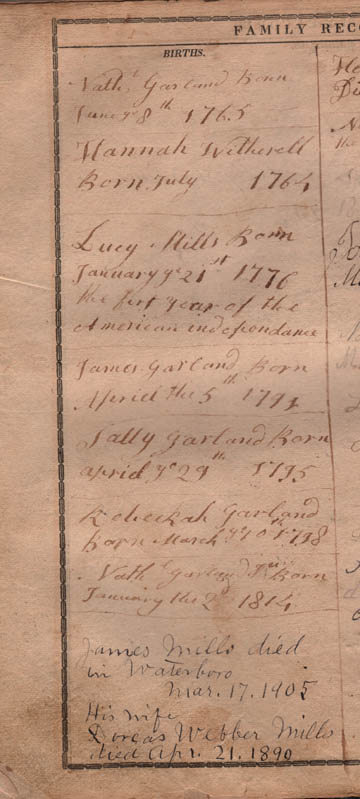 |
"Births [Page 6a]
"Nathl Garland Born June ye 8th 1765 Hannah Witherell Born July 1764 Lucy Mills Born January ye 21st 1776 the first year of the American independence James Garland Born Apriel the 5th 1791 Sally Garland Bornapriel ye 29th 1795 Rebeckah Garland Born March ye 10 1798 Nathl Garland Jr. Born January the 2d 1814 James Mills diedin Waterboro Mar. 17, 1905 His wife Dorcus Webber Mills died Apr. 21, 1890"
| ||
| 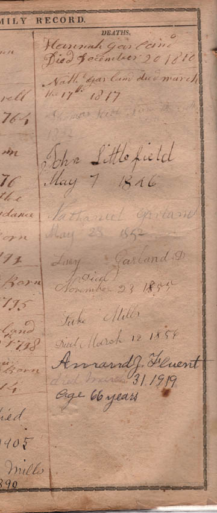 |
"Deaths [Page 6b] Hannah Garland Died December 20 1800 Nathl Garland died march the 17th 1817 Thomas Hill June the 3 [?] 1882 John Littlefield May 7 1846 Nathaniel Garland May 28, 1852 Lucy Garland D died November 23, 1855 Luke Mills Died March 12 1856 Amand J. Fluent Mar 31 1919 Age 66 years" | ||
| 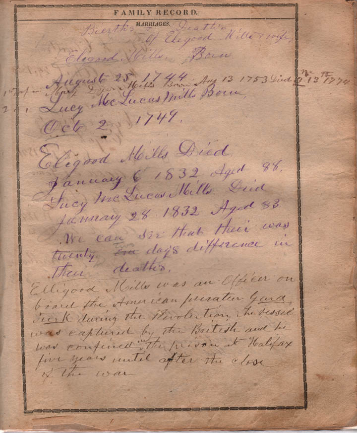 |
"[Page 7]
Births + Deaths Of Eligood Mills + wife Eligood Mills, Born August 25, 1744 1st wife Mary Dyer Mills Born August 13 1753 Died [?] 13th 1774 Lucy McLucas Mills Born Oct 2, 1749 Eligood Mills Died January 6 1832, Aged 88. Lucy McLucas Mills Died January 28 1832 Age 83 We can see that there was twenty one [corrected two] days difference in their deaths. ---------------- Elligood Mills was an Officer on board the American privateer Gard Turk during the Revolution. The vessel was captured by the British and he was confined in the prison at Halifax five years until after the close of the war."
| ||
| 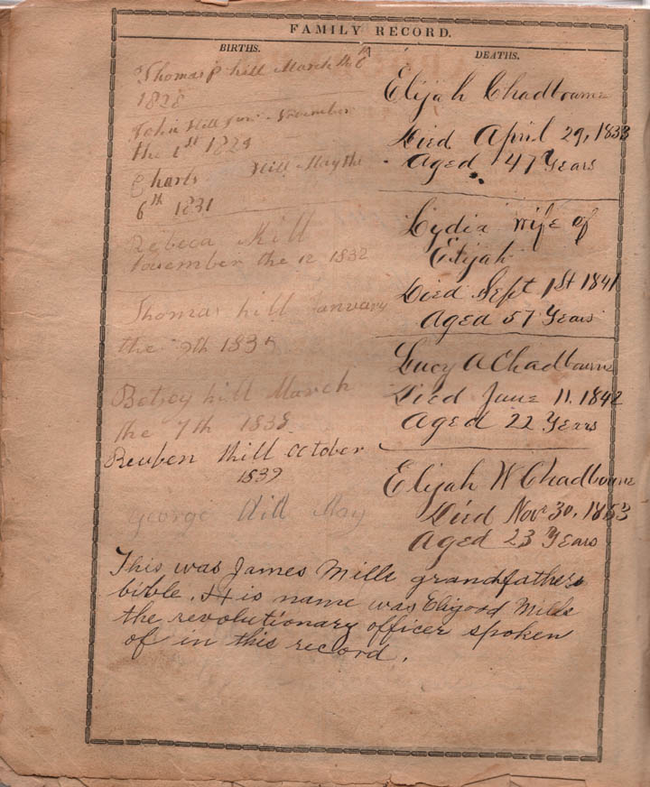 | The upper part of this page has two columns, which are transcribed separately below.] "This was James Mills grandfather's bible. His name was Eligood Mills the revolutionary officer spoken of in this record. "
| ||
| 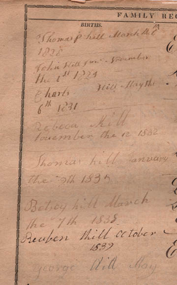 |
"Births [Page 8a]
Thomas P. hill March the 6th 1828 John Hill born November the 1st 1824 Charles Hill May the 6th 1831 Rebecca Hill November the 12th 1832 Thomas Hill January the 9th 1835 Betsey Hill March the 7th 1838 Reuben Hill October 1839 George Hill May"
| ||
| 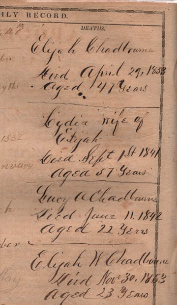 |
"Deaths [Page 8b]
Elijah Chadbourne Died April 29, 1833 Age 47 Years Lydia wife of Elijah Died September 1st 1841 Age 57 Years Lucy A. Chadbourne Died June 11, 1842 Age 22 Years Elijah W. Chadbourne Died Nov 30, 1853 Aged 23 Years"
| ||
| 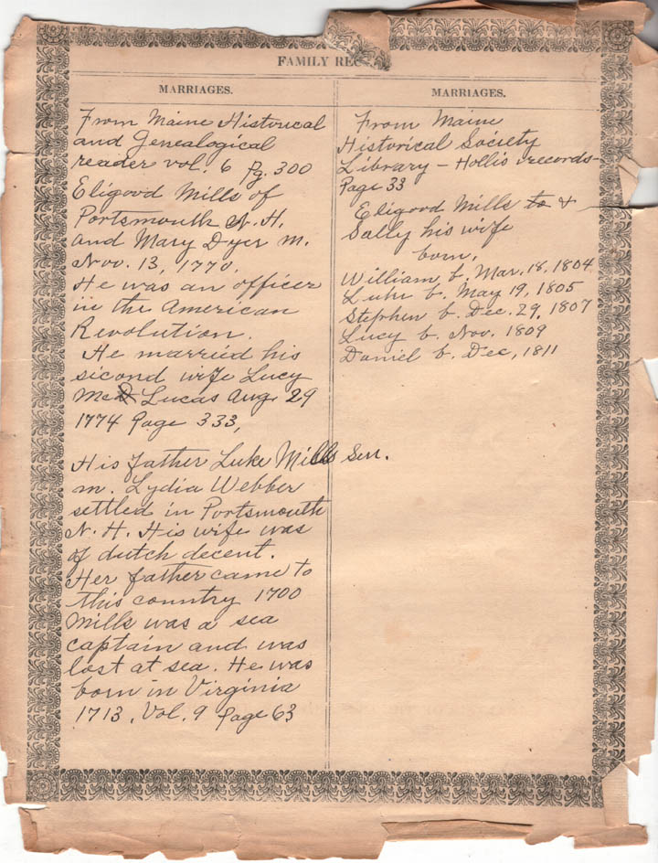 | This page has two columns, which are transcribed separately below.]
| ||
| 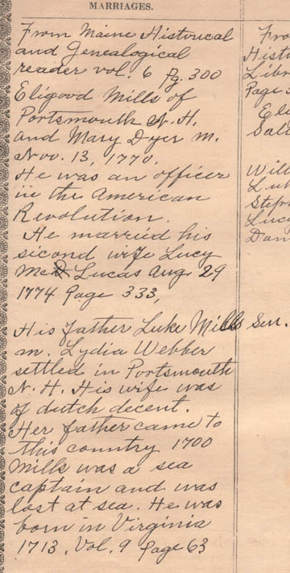 |
"Marriages [Page 9a]
"From Maine Historical and Genealogical reader vol 6 Pg. 300 Eligood Mills of Porsmouth N. H. and Mary Dyer m. Nov. 13, 1770 He was an officer in the American Revolution. He married his second wife Lucy McLucas Aug 29 1774 Page 333 --- His father Luke Mills Sen. m. Lydia Webber settled in Portsmouth N. H. His wife was of dutch descent. Her father came to this country 1700 Mills was a sea captain and was lost at sea. He was born in Virginia 1713. Vol. 9 Page 63"
| ||
| 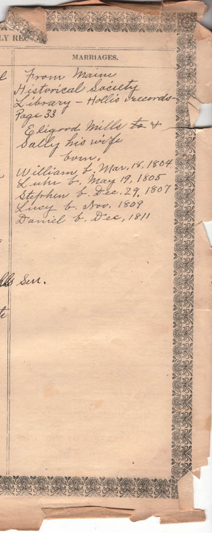 |
"Marriages [Page 9b]
From Maine Historical Society Library- Hollis records- Page 33 Eligood Mills to + Sally his wife born, William b. Mar. 18, 1804 Luke b. May 19, 1805 Stephen b. Dec 29, 1807 Lucy b. Nov. 1809 Daniel b. Dec. 1811" | ||
| 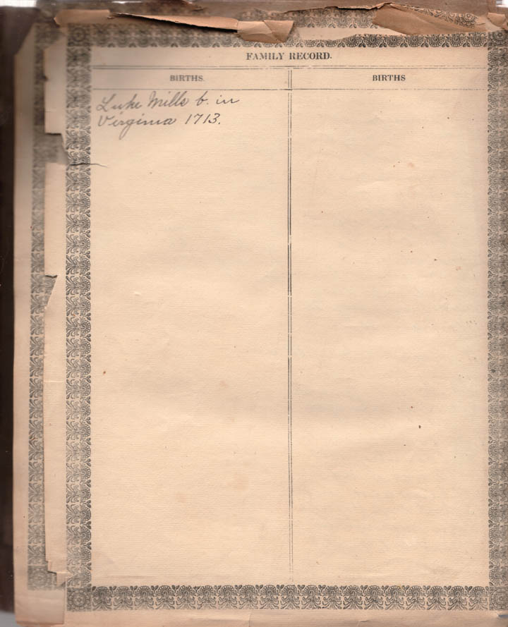 | [Page 10] "Luke Mills b. in Virginia 1713." | ||
| 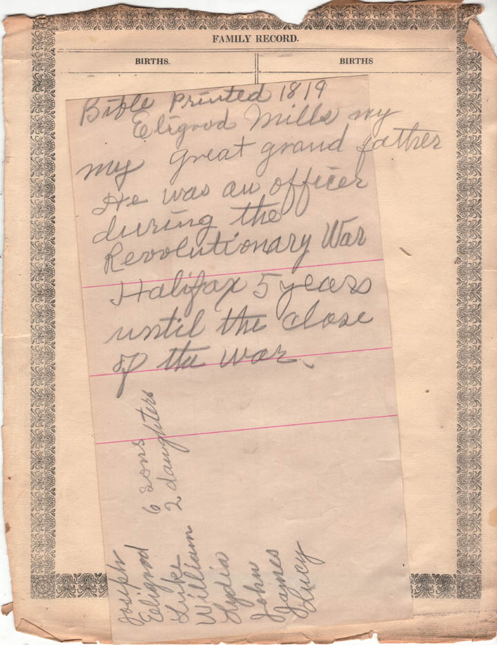 | [Page 11] " Bible printed 1819 Eligood Mills was my great grand father He was an officer during the Revolutionary War Halifax 5 years until the close of the war. [separate note] "Joseph, Eligood, Luke, William, Lydia, John, James, Lucy" "6 sons 2 daughters"
| ||
| 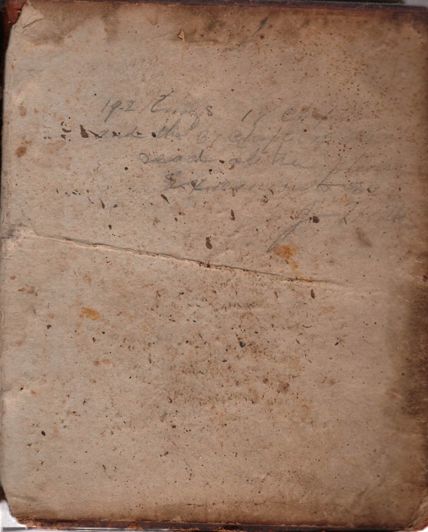 | [Faint pencil] "19-2 Kings 19 Chapter and the 31 Chapter of [illegible] dead alike please Examine + 822 J. Mills" |
||
| 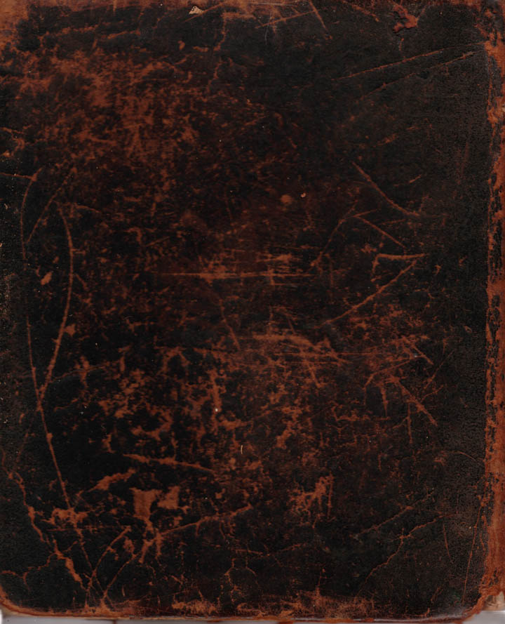 | |||
Last updated on 28 Mar 2010